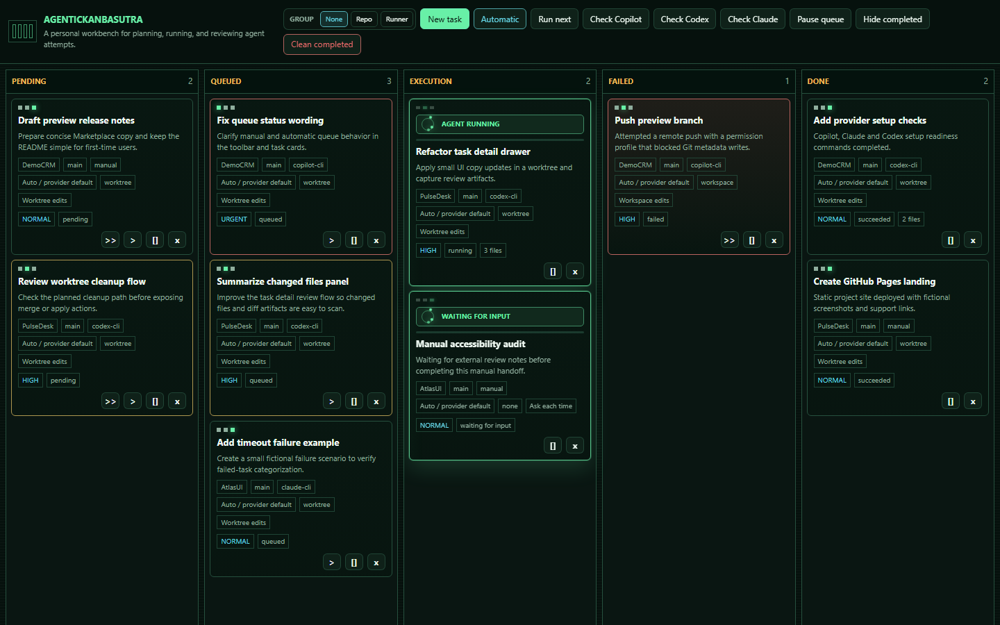
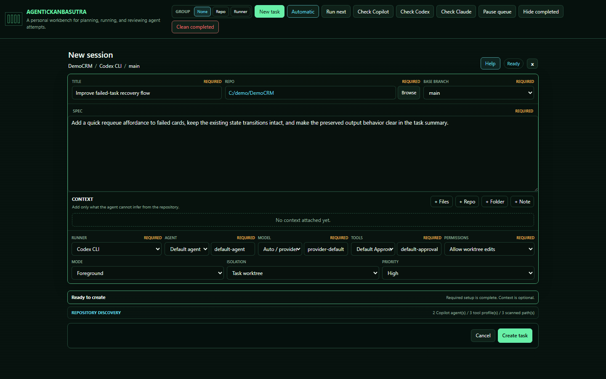
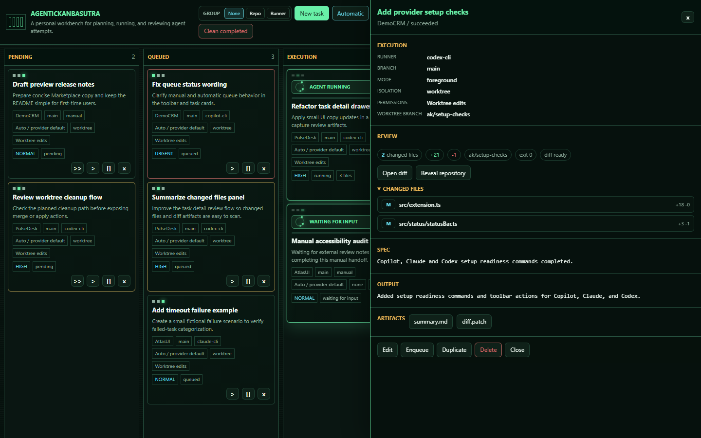

Preview VS Code Extension
AgenticKanbasutra
A local command center for turning coding-agent work into planned, queued, executable, and reviewable tasks.

Why it exists
Agent prompts should not disappear into chat history.
AgenticKanbasutra keeps each task attached to the repository, branch, runner, permissions, context, output, artifacts, and final review state. It is built for developers who want agent automation without losing visibility or accountability.
- Manual and automatic queue execution
- Collapsible repository and runner grouping for busy boards
- Prompt, stdout, stderr, summary, diff, and changed-file artifacts
- Failed-task review with quick requeue paths
Inside VS Code
The extension uses a focused WebView, not an external dashboard.


Workflow
From idea to reviewed output.
-
01
Create
Write the spec, attach only useful context, and select the repository, branch, runner, model, tools, permissions, and priority.
-
02
Queue
Keep execution manual, or switch to automatic mode with a configured concurrency limit.
-
03
Execute
Run local provider CLIs, generic commands, or manual handoffs while respecting the selected repository boundary.
-
04
Review
Move successful runs to Done, inspect failures, and requeue only when the cause has been understood.
Runners
Choose the safest execution path for each task.
Safety
Orchestration does not remove responsibility.
AgenticKanbasutra can launch local commands and provider CLIs that may edit files, create branches, commit, push, or consume paid provider resources. Review what is generated before accepting it.
Task records and run artifacts stay in VS Code extension storage on your machine, but they may contain prompts, notes, logs, paths, summaries, changed files, and diffs.
- Keep secrets out of specs and attached context
- Sanitize artifacts before sharing them publicly
- Prefer worktree isolation for write-capable runs
- Treat command templates as trusted code
- Use bypass permissions only when explicitly needed
Preview